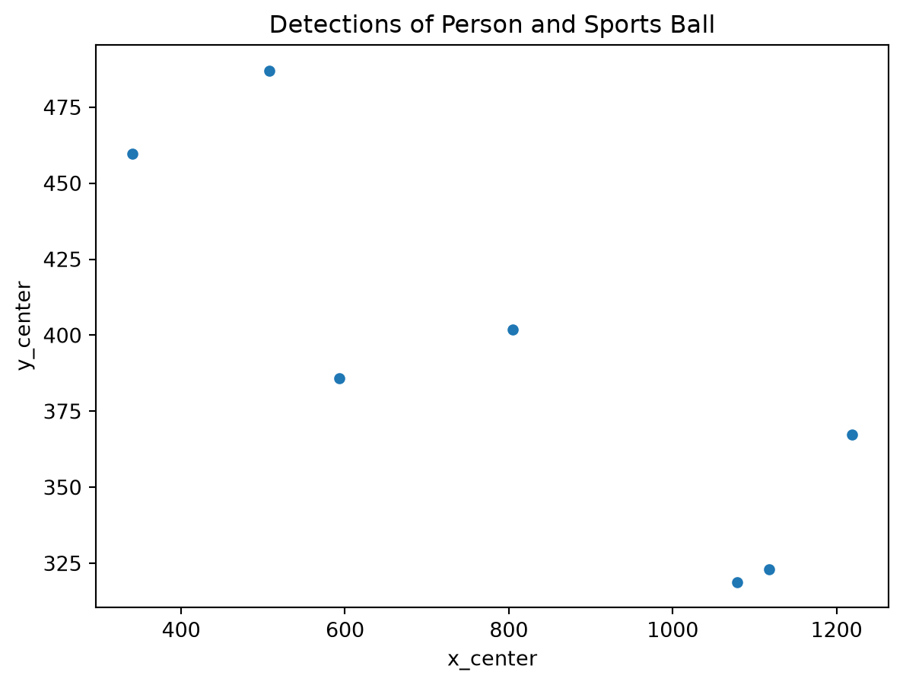

from ultralytics import YOLO
model = YOLO("yolov8n.pt")From Pixels to a DataFrame: Using Pretrained YOLO to Structure a Sports Frame
computer-vision
pandas
By the end of this post you will be able to:
- run a pretrained YOLOv8 model on an image
- turn its detections into a pandas DataFrame
- filter by class and confidence, then plot object locations
What YOLO gives you
Object detection is a computer vision task that involves identifying and localizing objects in an image. It is a fundamental building block for many computer vision applications, such as autonomous driving, surveillance, and image captioning. I think it’s especially useful for collecting data for machine learning models, to say train a model on how to play sports.
Step 1: Run the model on one image
First, we need to install the necessary libraries. We’ll use the ultralytics library to run the YOLO model and pandas to store the detections in a DataFrame. We’ll use the YOLOv8n model, which is a small model that is fast and accurate. We can load the model using the YOLO function from the ultralytics library.
We can then run the model on the image using the predict function.
result = model("frame.jpg")[0]
image 1/1 /Users/williamwestover/CS/stat386/blog/posts/yolo-detections-to-dataframe/frame.jpg: 448x640 14 persons, 1 sports ball, 32.5ms
Speed: 4.4ms preprocess, 32.5ms inference, 7.4ms postprocess per image at shape (1, 3, 448, 640)Step 2: Parse the detections into a DataFrame
The result is a list of detections. Each detection is a dictionary with the following keys:
- “boxes”: a list of bounding boxes
- “confidences”: a list of confidence scores
- “classes”: a list of class IDs
- “names”: a list of class names
We can convert the result to a DataFrame using the pandas library. We’ll create a DataFrame with the following columns:
- “class”: the class of the object
- “confidence”: the confidence score of the detection
- “x1”: the x-coordinate of the top-left corner of the bounding box
- “y1”: the y-coordinate of the top-left corner of the bounding box
- “x2”: the x-coordinate of the bottom-right corner of the bounding box
- “y2”: the y-coordinate of the bottom-right corner of the bounding box
- “x_center”: the x-coordinate of the center of the bounding box
- “y_center”: the y-coordinate of the center of the bounding box
import pandas as pd
df = pd.DataFrame(result.boxes.xyxy, columns=["x1", "y1", "x2", "y2"])
df["class"] = result.boxes.cls
df["confidence"] = result.boxes.conf
df["x_center"] = (df["x1"] + df["x2"]) / 2
df["y_center"] = (df["y1"] + df["y2"]) / 2df.head()| x1 | y1 | x2 | y2 | class | confidence | x_center | y_center | |
|---|---|---|---|---|---|---|---|---|
| 0 | 470.965454 | 661.028564 | 540.804321 | 726.816162 | 32.0 | 0.895933 | 505.884888 | 693.922363 |
| 1 | 735.585449 | 221.647293 | 874.859863 | 582.159607 | 0.0 | 0.891839 | 805.222656 | 401.903442 |
| 2 | 1180.006592 | 270.817169 | 1258.732178 | 463.702728 | 0.0 | 0.820904 | 1219.369385 | 367.259949 |
| 3 | 357.925842 | 300.451050 | 657.204651 | 673.726196 | 0.0 | 0.813189 | 507.565247 | 487.088623 |
| 4 | 196.579147 | 259.874481 | 483.515076 | 659.447632 | 0.0 | 0.758087 | 340.047119 | 459.661072 |
Step 3: Filter and plot
We can now filter the DataFrame to only include detections of “person” and “sports ball” with a confidence score greater than 0.5. We can then scatter plot the centers of the detections.
df = df[df["class"].isin([0, 2]) & (df["confidence"] > 0.5)]
df.plot.scatter(x="x_center", y="y_center", title="Detections of Person and Sports Ball")
A limitation: pixels are not the field
The coordinates are in pixel space, not real field positions. This means that the distances are not accurate. We can use a homography to transform the coordinates to real field positions.
Conclusion and next steps
We can now use the DataFrame to train a machine learning model to detect objects in images. We can also use the DataFrame to plot the detections on the image.
Try it yourself: Run the model on a frame from your favorite sport and count players per team.